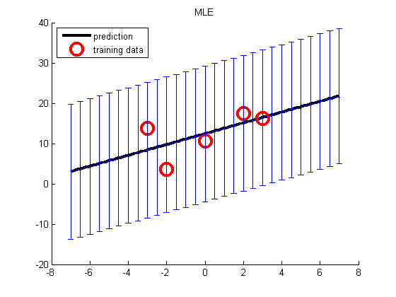
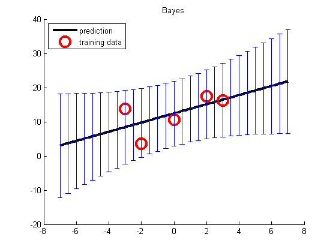

Posterior predictive density for Bayesian linear Regression in 1d
setSeed(1);
[xtrain, ytrain, xtest] = polyDataMake('sampling', 'sparse', 'deg', 2);
fitMethods = {@(x,y) linregFit(x,y), @(x,y) linregFitBayes(x,y)};
predictMethods = {@(x,y) linregPredict(x,y), @(x,y) linregPredictBayes(x,y)};
names = {'MLE', 'Bayes'};
for i=1:length(fitMethods)
model = fitMethods{i}(xtrain, ytrain);
[mu, v] = predictMethods{i}(model, xtest);
figure; hold on
plot(xtest, mu, 'k-', 'linewidth', 3, 'displayname', 'prediction');
plot(xtrain,ytrain,'ro','markersize', 14, 'linewidth', 3, ...
'displayname', 'training data');
NN = length(xtest);
ndx = 1:5:NN;
sigma = sqrt(v);
legend('location', 'northwest');
errorbar(xtest(ndx), mu(ndx), sigma(ndx));
title(names{i});
end
 